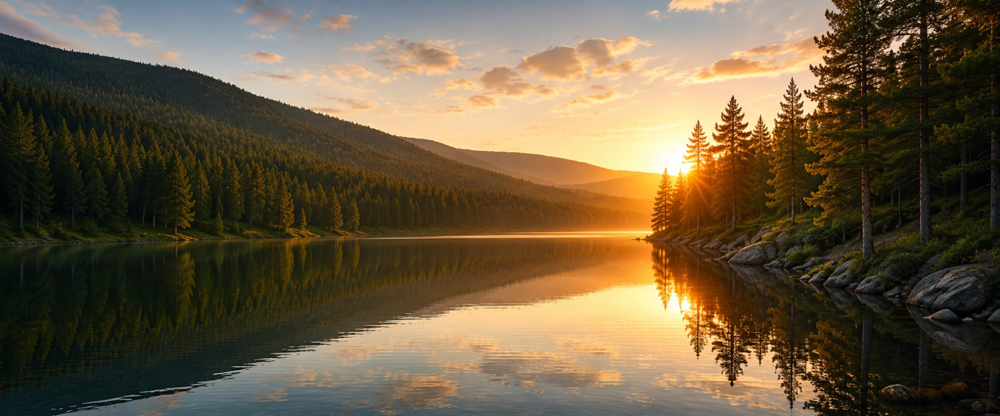
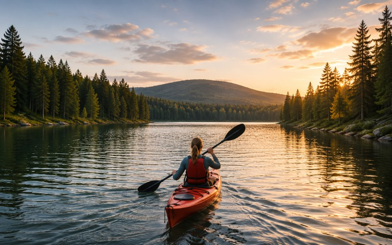

Naturen väntar i Norrgläntan
Upptäck vidsträckta skogar, stilla sjöar och storslagna vyer. I Norrgläntan finns plats för både äventyr och avkoppling.
Nära till naturen
I Norrglänten är naturen alltid nära. Här möts skogar, sjöar och berg i ett landskap som bjuder in till upplevelser året runt. Vandra längs slingrande leder, ta dig ut på vattnet eller hitta en lugn plats och njut av omgivningarna.Oavsett om du söker äventry eller bara vill komma bor en stund finns det alltid något nytt att upptäcka.
Upplev Norrgläntan

Vandra
Följ leder genom skog och över
öppna höjder. Här finns vandringar
får gåde korta utlykter och längre
dagar ute i naturen.

Paddla
Ta dig ut på Norrgläntans sjöar och
upptäck landskapet från vattnet.
Hitta din egen vik eller stanna till
vid någon av rastplatserna längs
stranden.

Upptäck
Ibland är det bästa äventyret det
som inte är planerat. Utforska
skogar och utsiktsplatser och
upptäck dina egna favoriter längs
vägen.
Planera ditt besök
Norrgläntan har något att erbjuda under hela året. Här hittar du boenden nära naturen och bra utgångspunkter för områdets aktiviteter. Börja platnera ditt besök och hitta det som passar dig.